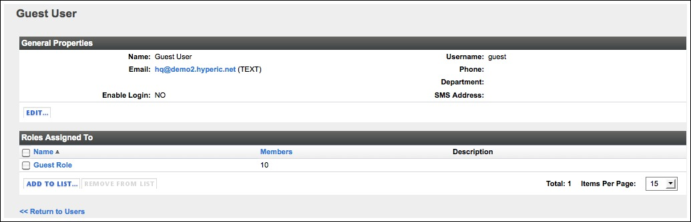
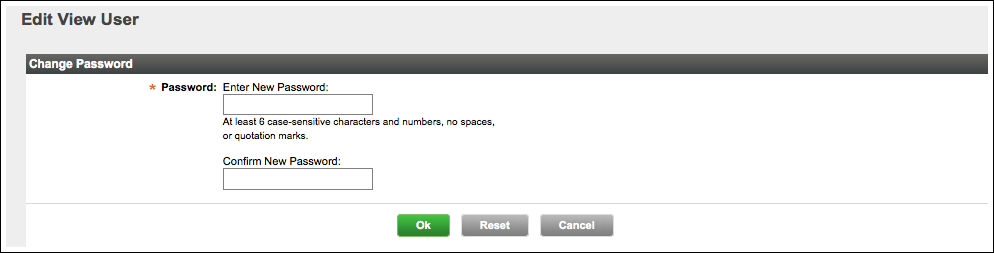

Topics marked with * relate to features available only in vFabric Hyperic.
| If you use external authentication... If Hyperic is configured to use your enterprise directory for user authentication, you do not have to manually create user accounts. Hyperic will automatically create an account for users that are externally authenticated by your LDAP, Active Directory, or Kerberos system. See the requirements on Create and Manage Roles in vFabric Hyperic. |
Create a New User Account
The sections below have instructions for creating a user, and in vFabric Hyperic, assigning roles to the user.
Define User Account Attributes
To create a new Hyperic user:
- Click New User on the Administration page.
- The New User page appears.

- Enter values for:
- Name
- Username — The username the user logs in with.
- Phone
- Department
- Password — Passwords must contain at least 6 case-sensitive characters and numbers, and no spaces or quotation marks.
- Email — User's email address.
- Format — Toggle the radio button to select HTML or plain text.
- SMS Address — An email-to-SMS gateway email address for the user's SMS device.
- For a cellular phone on the Cingular network, this might look like 4155551212@mobile.mycingular.com. Check with the service provider for details about an email-to-SMS configuration. Basic alert notification sent to this user's SSS address will be in long format, which can result in up to five separate messages on the SMS device each time notification is sent by HQ. Hyperic recommends that SMS alerting be used in conjuction with escalations, not basic alert notification, but short format is used there.
- Enable Login — Toggle the radio button to disable or enable the account. The user cannot log in when the login is disabled.
- Click:
- OK in Hyperic HQ to save the new account.
- OK and Assign to Roles in vFabric Hyperic.
Assign Roles to a New User Account
Available only in vFabric Hyperic
In vFabric Hyperic, the roles to which a user is assigned govern which resources the user may access, and the operations the user can perform on those resources. Each role in vFabric Hyperic defines a permission matrix; users with a role may exercise the permissions it grants, on the resources in groups assigned to the role.
To assign roles to a user:

- In the "Roles" panel on the left side of the page, checkmark each role to which you want to assign the user, and click the blue arrow to move the roles to the "Add to Roles" panel.
- Click OK when you are done adding users to the role.
List User Accounts
- Click List Users on the Administration page.
- The List Users page appears.
A screenshot of the List Users page is shown below.

The List Users page lists the following information for each user account.- First Name
- Last Name
- UserName — Click a user name to view and edit the user account.
- Email — Click an email address to send mail to the user.
- Department
- The List Users page appears.
View a User Account
- List user accounts, following the instructions in List User Accounts.
- Click the UserName for the user account you wish to view.
- The UserName page appears.
A screenshot of the user account page is shown below.

- The General Properties section contains this information:
- Name
- Username — The username the user logs in with.
- Phone
- Department
- Password — The user's password is not displayed. If you have the permission to modify the password, a Change... link is present.
- Email — User's email address. Click to send an email to the user.
- Format — Format for email notifications sent to the user — HTML or plain text.
- SMS Address — An email-to-SMS gateway email address for the user's SMS device.
- Enable Login — Indicates whether or not the account is enabled. The user cannot log in when the login is disabled.
- The Roles Assigned To section contains:
- A list of the roles to which the user is assigned.
- An Add to List button — click it to assign additional roles to the user.
Modify User Account Settings
- Navigate to the user account, as described in View a User Account.
Change Password
The Change Password page allows you to change a user's account password.
| Requirements for changing passwords In vFabric Hyperic, only a user with a role that grants "Full" or "Read/Write" permissions to user accounts may change another user's password. You must enter your current password in order to change an account password, whether the account is yours, or another user's. |
To change the password for a Hyperic account:
- Click the Administration tab in the Hyperic user interface.
- Click List Users in the "Authentication/Authorization" section.
- The List Users page appears.
- Click the link in the "UserName" column for the user whose password you wish to change.
- In the "General Properties" section of the page that appears, click the Change... link in the "Password" field
- The Change Password page appears.

- The Change Password page appears.
- Enter your password in the Enter Your Current Password field.
- The password entered must be the password of the user making the change, not the password of the user whose password is being changed.
- Enter the new password for the selected account in the New Password field.
- Re-enter the password in the Confirm New Password field.
- Click OK.
Edit Account Settings
- Click Edit in the "General Properties* section of the UserName page.
- The *Edit UserName page appears.
A screenshot of the Edit User page is shown below.

- Enter values for:
- Name
- Username — The username the user logs in with.
- Phone
- Department
- Email — User's email address.
- Format — Toggle the radio button to select HTML or plain text.
- SMS Address — An email-to-SMS gateway email address for the user's SMS device.
- For a cellular phone on the Cingular network, this might look like 4155551212@mobile.mycingular.com. Check with the service provider for details about an email-to-SMS configuration. Basic alert notification sent to this user's SSS address will be in long format, which can result in up to five separate messages on the SMS device each time notification is sent by HQ. Hyperic recommends that SMS alerting be used as a step in an escalations, not basic alert notification, but short format is used there.
- Enable Login — Toggle the radio button to disable or enable the account. The user cannot log in when the login is disabled.
- Click OK.
- Enter values for:
- The *Edit UserName page appears.
Update Roles Assigned to a User
Available only in vFabric Hyperic
- Click Add to List in the "Roles Assigned To* section of the UserName page.
- The *Edit UserName page appears.
- The *Edit UserName page appears.
- In the "Roles" panel on the left side of the page, checkmark each role to which you want to assign the user, and click the blue arrow to move the roles to the "Add to Roles" panel.
- Click OK when you are done adding users to the role.